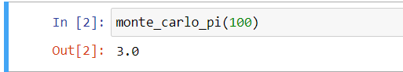
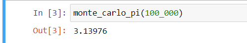

Ahmad Hamze
March 3, 2021
Estimating pi
Using the Monte-Carlo simulation to estimate the value of π
First of all, let's talk briefly about what is a Monte-Carlo simulation.
Simply put, it is a computational method that uses a large number of random samples to obtain a result. It is used in a
wide range of disciplines like mathematics, computer graphics, and physical sciences.
In this blog, we will see how we can use this method to estimate the value of the mathematical constant \( \pi \).
Concept
How can a large number of random samples be used to estimate \( \pi \)?
Suppose we have a circle inscribed in a square, if we throw a pile of sand randomly on the square, some grains will end up
inside the circle and others will end up outside of it. The following animation illustrates this concept,
the blue dots represent the grains that are inside the circle and the red ones represent the ones outside of it.
If you wait a few moments you will start to see a circle filled with blue dots (a blue disk) and the areas outside of it are filled with red dots.
We can compute the proportion of grains that ended up inside the circle, this value equals the proportion of the circle
to the square. Besides, the more grain of sands we throw onto the square the more accurate the estimation will be.
But why is this true? The Monte-Carlo simulation is an example of the "Law of Large Numbers (LLN)", this is not the focus of this
blog, if you want to know more you can check this wikipedia article
Law_of_large_numbers.
First, let's figure out what the proportion of the circle in relation to the square is.
The area of the circle is \(\pi r^2\), on the other hand we will consider a unit square having an area of 1.
Therefore the proportion we're looking for is \(\cfrac{\pi / 4}{1} = \dfrac{\pi}{4}\).
The second value we're looking for is the proportion of the grains inside the circle. Denote \(success\) the number of these grains, and \(trials\)
the total number of grains thrown, so the proportion is \(success/trials\).
Now, let's write the equation
$$ \dfrac{\pi}{4} = \dfrac{success}{trials} \Harr \pi = 4\cdot \dfrac{success}{trials} $$
There you go! What we have to do now is to simulate a lot of "trials" and see how many are "success" i.e. inside the circle.
Code
We will be creating an array containing many couples of variables representing the coordinates of each point (grain of sand),
then we calculate whether the point is within the disk or not, the disk center is \( (1/2, 1/2) \).
Each point \( (x,y) \) is a bivariate uniform random variable on the unit square, \( (x,y) \in (0,1)^2 \)
and the disk is defined by:
$$ \Big\{(x,y) \in \R^2; \Big(x - \frac{1}{2}\Big)^2 + \Big(y - \frac{1}{2}\Big)^2 \leq \Big(\frac{1}{2}\Big)^2 \Big\}$$
import numpy as np
def monte_carlo_pi(trials):
b_uniform = ((np.random.uniform(0,1), np.random.uniform(0,1)) for _ in range(trials))
success = sum(((x - 0.5)**2 + (y - 0.5)**2 <= 0.25 for x,y in b_uniform))
return 4 * (success/trials)
The code above defines a function "monte_carlo_pi" that takes the number of random trials to generate as argument.
The "b_uniform" is a generator containing "trials" amount of random points all within the square. The "success" variable is
simply the number of points situated inside the circle. Finally the estimated value of \( \pi \) is returned.
Results
We expect that the larger number of trials we use the better the estimation of \( \pi \) will be.
Let's see the result when using only 100 trials.

We got 3.0 as an estimation, this is quite far from the value that we're mostly used to (e.g.

Now we're at 3.13976, much better. Finally, let's try 1,000,000 trials

The estimation got even closer, we're at 3.144164.
Conclusion
The Monte-Carlo method got a decent approximation of \( \pi \) when using 1,000,000 trials, so why not use even more trials?
How about 100 million? What about 100 billion?
The theory states that the more trials we make the better the approximation, but there is a limit when using computers.
Also, more trials will result in more computing time, 100 million trials will give an estimation of
A better result, however, it took eight and a half minutes to complete.
There are many ways to enhance the performance of our code, including using the Numba library and parallelization, this will be covered
in another blog.